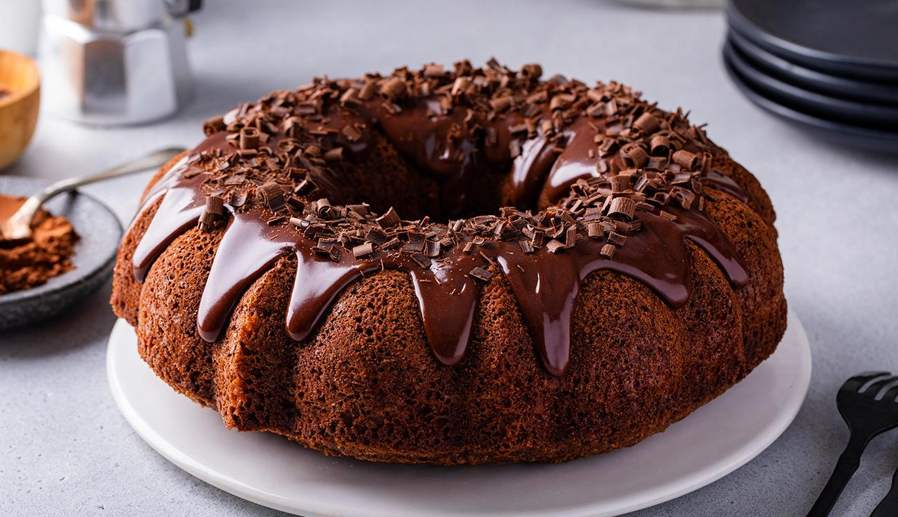
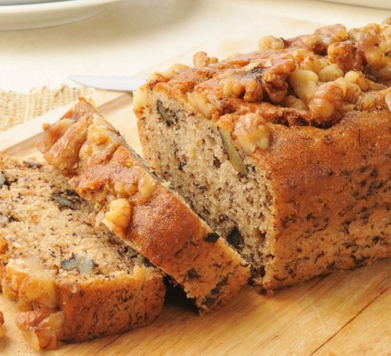
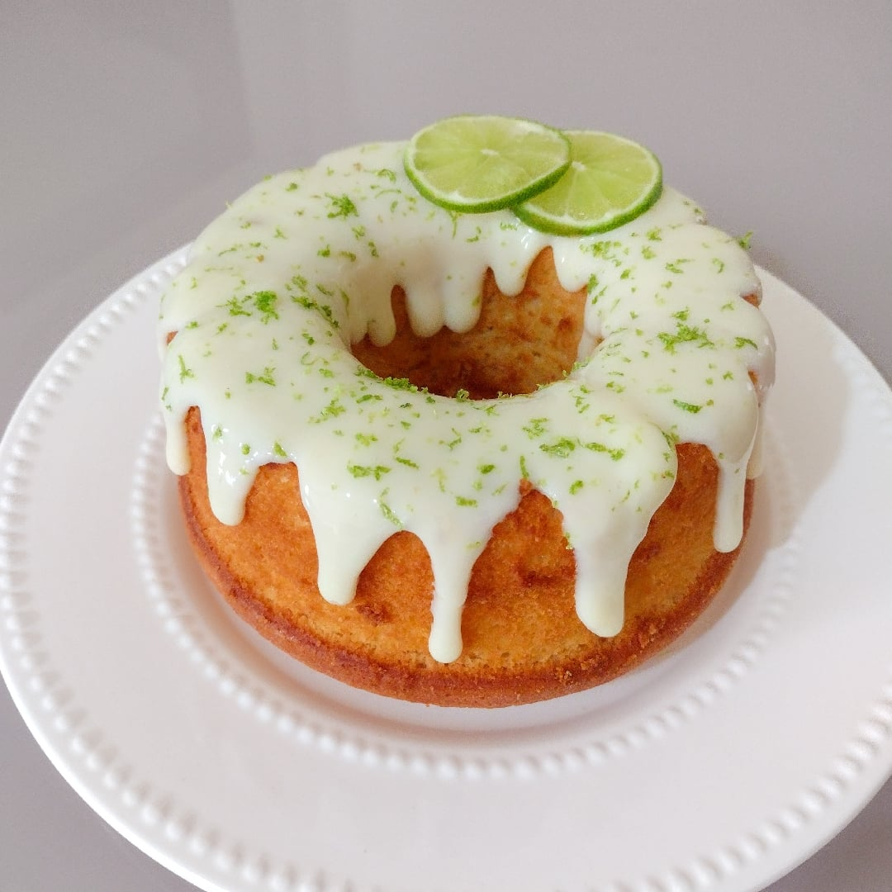

Cachorro-quente
Ingredientes:
- 6 cenouras pequenas
- 6 pães para cachorro-quente
- 1 xícara de chá de cebola descascada e picada
- 1 xícara de chá de molho de tomate
- 4 colheres de sopa de salsinha e cebolinha picadas
- 3 colheres de sopa de azeite de oliva
- 1 colher de café de sal
- 1 colher de sopa de páprica defumada
- 1 xícara de chá de milho-verde em conserva sem a água
- Água para cozinhar
Modo de Preparo:
- Descasque as cenouras, coloque-as em uma panela, cubra com água e leve para cozinhar em fogo médio por 10 minutos. Escorra a água, espere as cenouras esfriarem e transfira para um recipiente. Adicione a páprica, o sal, o azeite e misture bem. Deixe descansar por 20 minutos.
- Em uma panela, coloque o azeite e leve ao fogo médio para aquecer. Acrescente a cebola e doure. Junte o molho de tomate e misture bem. Coloque a salsinha e a cebolinha, acerte o sal e cozinhe por 5 minutos. Retire do fogo e reserve. Em uma frigideira, coloque as cenouras e leve ao fogo médio para grelhar. Reserve.
- Corte o pão no sentido horizontal, sem separar. Coloque dentro uma cenoura, um pouco do molho de tomate e um pouco de milho-verde. Faça o mesmo com todos os pães e sirva em seguida.
Pão de Queijo Vegano
Ingredientes:
- 1 xícara de farinha de tapioca
- 1/2 xícara de purê de batata-doce (ou batata comum, cozida e amassada)
- 1/4 xícara de queijo vegano ralado (pode usar queijo vegano pronto ou uma mistura caseira de nozes e temperos)
- 1/4 xícara de óleo vegetal
- 1/2 xícara de leite vegetal (amêndoa, soja, etc.)
- 1 colher de chá de fermento em pó
- 1/2 colher de chá de sal
- 1/2 colher de chá de alho em pó (opcional)
- 1/2 colher de chá de cebola em pó (opcional)
- Pimenta do reino a gosto
Instruções:
- Pré-aqueça o forno a 180°C e unte uma forma de mini muffins ou coloque forminhas de papel.
- Misture os ingredientes secos: em uma tigela grande, combine a farinha de tapioca, o fermento, o sal, o alho em pó e a cebola em pó.
- Prepare a mistura líquida: em outra tigela, misture o purê de batata-doce, o óleo e o leite vegetal até obter uma mistura homogênea.
- Combine as misturas: adicione a mistura líquida aos ingredientes secos e mexa bem até que esteja tudo bem incorporado. Se estiver usando queijo vegano ralado, adicione-o à mistura.
- Coloque a massa nas forminhas: com uma colher, distribua a massa nas forminhas de muffin, preenchendo até cerca de 2/3 da capacidade.
- Asse por 20-25 minutos ou até que os pães de queijo estejam levemente dourados e firmes ao toque. Deixe esfriar um pouco antes de servir. Eles ficam ótimos quentes ou à temperatura ambiente.
Bolo de Chocolate Vegano
Ingredientes:
- 1 xícara de farinha de trigo
- 1 xícara de açúcar
- 1/3 xícara de cacau em pó
- 1 colher de sopa de fermento em pó
- 1/2 colher de chá de bicarbonato de sódio
- 1/4 colher de chá de sal
- 1/3 xícara de óleo vegetal
- 1 xícara de leite vegetal (amêndoa, soja, etc.)
- 1 colher de sopa de vinagre de maçã
- 1 colher de chá de essência de baunilha
Instruções:
- Pré-aqueça o forno a 180°C.
- Em uma tigela grande, misture os ingredientes secos.
- Em outra tigela, misture os ingredientes líquidos.
- Combine as misturas e mexa até ficar homogêneo.
- Despeje a massa em uma forma untada e enfarinhada.
- Asse por 30-35 minutos ou até um palito sair limpo.
Bolo de Banana e Nozes
Ingredientes:
- 3 bananas maduras amassadas
- 1/2 xícara de óleo de coco derretido
- 1/2 xícara de açúcar mascavo
- 1/4 xícara de melado (opcional)
- 1 xícara de farinha de trigo
- 1 colher de chá de fermento em pó
- 1/2 colher de chá de bicarbonato de sódio
- 1/2 xícara de nozes picadas
Instruções:
- Pré-aqueça o forno a 180°C.
- Misture as bananas amassadas com o óleo, açúcar e melado.
- Adicione a farinha, fermento e bicarbonato e misture bem.
- Incorpore as nozes.
- Despeje em uma forma untada e asse por 40-45 minutos.
Bolo de Limão e Sementes de Papoula
Ingredientes:
- 1 xícara de farinha de trigo
- 1/2 xícara de açúcar
- 1/4 xícara de sementes de papoula
- 1 colher de chá de fermento em pó
- 1/4 colher de chá de bicarbonato de sódio
- 1/4 colher de chá de sal
- 1/2 xícara de leite vegetal
- 1/4 xícara de suco de limão
- 1/4 xícara de óleo vegetal
- Raspas de 1 limão
Instruções:
- Pré-aqueça o forno a 180°C.
- Misture todos os ingredientes secos em uma tigela.
- Em outra tigela, misture os líquidos e as raspas de limão.
- Combine as duas misturas e mexa bem.
- Despeje em uma forma e asse por 25-30 minutos.
Bolo de Maçã e Canela
Ingredientes:
- 2 maçãs descascadas e picadas
- 1/2 xícara de açúcar
- 1/4 xícara de óleo vegetal
- 1 xícara de farinha de trigo
- 1 colher de chá de fermento em pó
- 1 colher de chá de canela em pó
- 1/4 colher de chá de bicarbonato de sódio
- 1/4 colher de chá de sal
- 1/2 xícara de nozes picadas (opcional)
Instruções:
- Pré-aqueça o forno a 180°C.
- Em uma tigela, misture as maçãs com o açúcar e reserve.
- Em outra tigela, misture os ingredientes secos e, em seguida, adicione o óleo e as maçãs.
- Coloque a massa em uma forma untada e asse por 35-40 minutos.